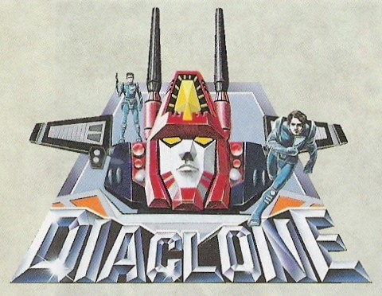
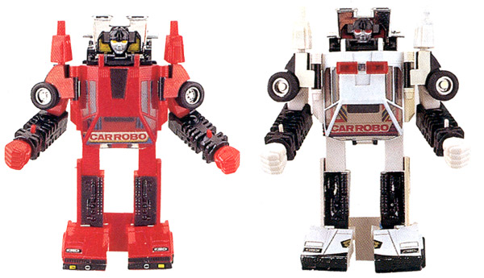
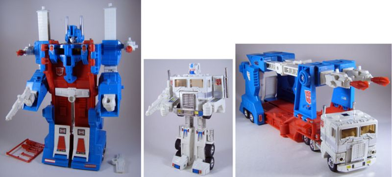
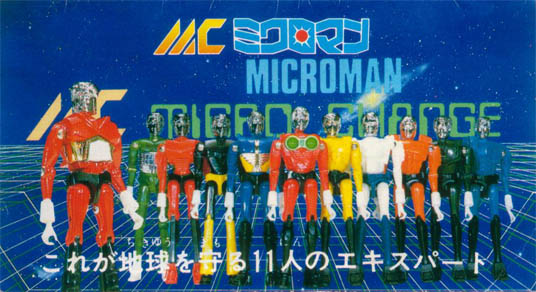

The Origins Of The Franchise
The Transformers was a franchise that was created in the 1980’s primarily as a way to advertise Hasbro’s Transformers line, which initially consisted of a number of newly acquired toys from Takara’s Diaclone and Microchange lines albeit with slight modifications (head sculpts, color schemes, etc), along with some of their own original pieces. The series that these toys had originated from had these characters as just mechs that were utilized by human pilots, however, under the Transformers brand, every toy was a sentient robot, and so the story was written to accommodate this fact.
Since the series first aired, the FCC has since enforced stricter regulations around children’s programming (at the time, Ronald Reagan’s deregulation policies allowed the lines between advertisement, and entertainment to blur). Now, a program may not use an on on-screen talent, or ‘identifiable program characteristics' (or display website addresses) to advertise during or adjacent to the 'host' program, even if the website contains primarily non-commercial program-related material. While these regulations have not substantially affected toy-related shows, they have largely curtailed the practice of creating a toy-related show specifically to promote and market a toy.
The Diaclone Line
The Diaclone line of toys were first introduced in the 1980's, however, it was not until March of 1982, that the toys vebicles began to appear as part of the "Car Robots" subline. The first toy in this sub-line was the Diaclone predeccessor of Sunstreker, whom Hasbro now considers to be the first fully fledged transforming car-to-robot toy ever designed. Its vehicle form was based on an older Takara toy, the "Cosmo Countach" from the Microman "Micro Command" sub-line released in 1978, which transformed into a half-robot, half-car hybrid.
Before the Transformers brand was introduced, Takara directly exported some Diaclone toys to North America under the brand names Diakron and Kronoform, however, these lines met with very little success. A French toy company, Joustra, also released various Diaclone figures in Europe under the original Japanese name (sporting unique box art), with a few exclusive Revell model kits and even an accompanying mini-comic series, but these also faded into obscurity.
It was in 1983 that Hasbro representatives discovered the Diaclone and Microchange toys at the Tokyo Toy Show, and soon struck a deal to create the Transformers. The toys from the Diaclone line that would be reintroduced under the Transformers brand would be 1984 and 1985 Autobot Cars, the 1984 Decepticon Planes, 1985 Dinobots, 1985 Constructicons, Trainbots, Omnibots, Powerdashers, Jumpstarters, Blitzwing, 1984 Optimus Prime, and 1986 Ultra Magnus.
- The Autobot Cars
- The Decepticon Planes
- The Dinobots
- The Constructicons
- The Trainbots
- The PowerDashers
- Blitzwing
- Optimus Prime
- Ultra Magnus 


When the Transformers proved to be an unqualified success, the plans for a 1985 Diaclone line were scrapped, and the Transformers were imported to Japan instead. These asborted toys , which would have been part of a sub-line called Jizai Gattai ("Free Combination"), were then incorporated into the Transformers toyline in 1986 as the the Aerialbots, Stunticons, Protectobots, and Metroplex.
The Micro-Change Line
This line was a subline of Takara's successful New Microman line in the 1980's which comprised of approximately 4'' action figures that were super-posable, along with vehicles and robots to be usedby them. These figures were on a 1:1 scale, rather than representing full-sized humans/aliens/robots, so the transforming robots and vehicles they created had ordinary household objects as disguise modes. Many of these figures came in multiple scehems, many of which were eventually used in the Transformers line.
- The Cassettes
- Frenzy
- Rumble
- Ravage
- Laserbeak
- Small Autobot Cars
- Cliffjumper
- Bumper
- Bumblebee
- Gears
- Brawn
- Wndcharger
- Huffer
- Reflector
- Soundwave
- Megatron
- Blaster